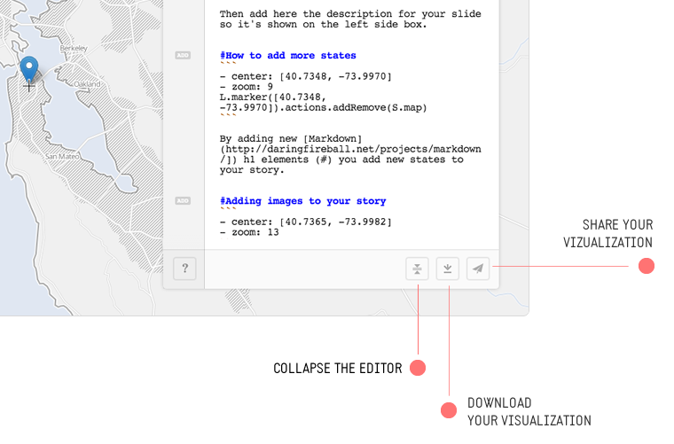
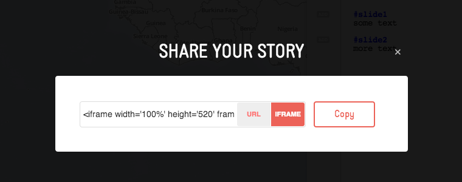

How it works
Odyssey.js is an open-source tool that allows you to combine maps, narratives, and other multimedia into a beautiful story. Creating new stories is simple, requiring nothing more than a modern web-browser and an idea. You enhance the narrative and multimedia of your stories using Actions (e.g. map movements, video and sound control, or the display or new content) that will let you tell your story in an exciting new way. Use our Templates to control the overall look and feel of your story in beautifully designed layouts.
Experts can also add custom Templates and Actions by following our contribution guide. We are excited about adding YouTube, Vimeo, Soundcloud, and Twitter based Actions, if you can help let us know!
The library is open source and freely available to use in your projects.
Warning
We are at an early stage of development where many things are still in flux! Be prepared for what you see today to change tomorrow :)
Quick start
Create a new Story
If you want to start using the sandbox, go to the homepage, click the button to create a new story or just go here.
Name your project
Change the top level data in the sandbox. Change the title and the author. You should see changes to these elements live in the Template preview.
- title: "10 years later..."
- author: "Homer"
Add story content
Stories are broken down into chapters. Each chapter begins with a title and then can contain a mix of headlines, text and other Markdown elements (images, links, etc.). Here is an example of one chapter:
# The beginning
Tell me, O muse, of that ingenious
hero who travelled far
Publish your story
There are a few options for publishing your story. The first is to publish it directly to the web using the Publish button. By using the Publish button, your story will be hosted on GitHub and you will be provided a public link to share and view your story. The second way to publish a story is to click the Download button to save a local copy of the story. You can then host this copy on your own GitHub account or your own servers. The archive will contain the HTML, CSS, and JavaScript you need to publish the story wherever you prefer.

Publish it on your site
In the Share options for your story, you can select the third option, IFRAME.

After you have selected iFrame, you can use this code to embed your story on your website or blog.
Save and return to your story
You can always save and return to your existing story by bookmarking your current URL. The URL is dynamic, so any changes you make in the sandbox will result in a new URL. Be sure to rebookmark the page if you make changes. You can also cut & paste the URL to share with collaborators.
The Odyssey Sandbox
The Odyssey Sandbox allows you to link map changes and movements to different elements in a web document through the use of Markdown. We have included a small number of webpage templates to help you quickly create your stories.

Hosted Templates
Templates control the overal structure and layout of your story. They define the position of your map and story elements and define the method by which your story will progress. We have developed three templates to get you started.
Slide template
The slide template acts like a Keynote or PowerPoint presentation. Your story is broken down into different states or slides, so you can go forward or backward just by clicking the arrows on the screen buttons or by pressing the forward/back arrows on your keyboard. This is perfect for stories that don’t have too much text and you want to highlight the map as the principal element.
Scroll template
The scroll template is moves based on when the viewer scrolls the page. As you scroll up or down, the story moves forward or backward. This template works really well with stories that have a lot of editorial content such as images and texts, and where the map adds more context to the story.
Torque template
Use this template if your data is animated. This template adds triggers to your animated map so when reaching a certain point on the timeline your contextual information changes. This is perfect for adding extra information to animated stories.
Examples
Here’s a list of projects making use of hosted templates:
Custom templates
Experts can create and use custom Templates with Odyssey. If you are interested in using a custom template see the following section.
Examples
Here’s a list of projects making use of custom templates:
Advanced use of the Sandbox
Markdown syntax
Markdown syntax is used in the Odyssey Sandbox and contains all the features documented in the Daring Fireball documentation.
Config block
The config block is a control element at the top of your story’s Markdown document. You can capture information such as author and project title using the config block. Depending on which template you choose, information from the config block may be displayed as part of the webpage.
Default options
In the Scroll and Slide templates, you will see these two options as defaults:
-
title
Title of your story -
author
Name of the story author
- title: "This is my story title"
- author: "Odyssey master"
Optional options
If you are creating a visualization that uses a CartoDB map, you will see the following options in addition to the default:
-
vizjson
The URL to any viz.json on cartodb -
cartodb_filter
The value for the column you want to filter
- vizjson: "http://viz2.cartodb.com/api/v2/viz/your-viz-key-here/viz.json"
- cartodb_filter: "column='VALUE'"
Torque options
If you are creating a visualization that uses the Torque wizard, you will see the following option in addition to the default:
- duration
Duration of torque animation (default is 30)
- duration: 30
Make sure that your vizjson links to a Torque visualization in order to use this template effectively.
Chapters
Chapters define each section of your story and allow you to perform new Actions when a user reaches the chapter. Chapters are defined by including a new header element, the # in Markdown. In this example code shown, the line # The escape would indicate the start of a new chapter.
# The escape
But as the sun was rising from the
fair sea into the firmament...
The Actions block
At the heart of Odyssey are Actions. For each chapter of your story, you can add one or many actions to unfold when the reader arrives. Each time you add a new chapter, an add button appears in the sandbox to the left of the chapter’s starting line. You can click the add button to create new Actions in the chapter. You can string Actions together, one followed by the next, and use the Sleep action to create delays between actions.
You can also add actions manually once you get a hang of the syntax. The code shown here demonstrates what a chapter title and action block will look like in the sandbox.
# Title of the section
- center: [10.000, -10.000]
- zoom: 6
L.marker([0.0000, 0.0000]).actions.addRemove(S.map)
See the list below for a complete list of available actions and their descriptions.
Map Actions
-
Move to
Sets the map’s center point in latitude and longitude decimal degrees- center: [40.7127, -74.0059] -
Zoom to
Sets the map’s zoom level using an integer number from 0 to 18- zoom: 3
Control Actions
- Sleep
Pauses the map at a location you determine with the Map Actions above, for a pre-set period of time (in milliseconds)
Data Actions
-
Show marker
Places a marker at a latitude/longitude point which you specify -
Pending
Show infowindow
Torque Actions
-
Sleep
Insert time is an option that links your current story stage with the current frame of your Torque animation. If triggered, it will insert the step option into your options and signify when in the Torque animation to display the current stage of your story.``` - step: 86 ``` -
Pause
Tells the Torque animated map to pause playing at the current step. Often used with the Sleep action to stay at a given step in the Torque animation before triggering a Play action again.S.torqueLayer.actions.pause() -
Play
Tells the Torque animated map to continue playing. The default state is play, so only use this after a pause action.S.torqueLayer.actions.play()
Pending Actions
- Video actions
- Audio actions
html5audio
soundcloud
Images
Adding images in Markdown is simple, and you have a few options. The first is the following:

Here, the “Alt text” will appear when you hover, and the image path or URL is specified in the parentheses.
If you want to use a defined image reference, you can also do that. The markdown would look like:
![Alt text][id]
Here, the Alt text is the same as above, but the [id] is the name of a defined image reference which you have named elsewhere. It would look something like:
[id]: url/to/image "Optional title attribute"
Finally, you can also use simple HTML <img /> tags if you wish to edit attributes of the image, like size. For example:
<img width="200px" src="http://imgur.com/69Gxjih.jpg" />
Links
In Markdown, there are two ways to add links. Both are similar to how you add images, which we described above. The simplest way is to add links inline. Your markdown would look like:
This is [an example](http://example.com/ "Title") inline link.
Here, the text in brackets would be the active link. The URL is placed within parentheses and can also be a relative path to a local resource. The Title is entirely optional, and can be left out.
You can also use a reference-style link, which would look like:
This is [an example][id] reference-style link.
Here, the first text in parentheses would be the link, and the second text is a label refering to the label you have defined elsewhere in your document. The definition of your label (i.e. assigning it a URL to visit) would look like:
[id]: http://example.com/ "Optional Title Here"
Javascript API
Install
Grab dist/odyssey.js and add it at the end of your <body> element in your html file.
<script src="odyssey.js"></script>
Quick start
Create the map and add the story.
function click(el) {
var element = O.Core.getElement(el);
var t = O.Trigger();
element.onclick = function() {
t.trigger();
}
return t;
}
O.Template({
init: function() {
var seq = O.Triggers.Sequential();
var baseurl = this.baseurl = 'http://{s}.api.cartocdn.com/base-light/{z}/{x}/{y}.png';
var map = this.map = L.map('map').setView([0, 0.0], 4);
var basemap = this.basemap = L.tileLayer(baseurl, {
attribution: 'data OSM - map CartoDB'
}).addTo(map);
// enanle keys to move
O.Keys().on('map').left().then(seq.prev, seq)
O.Keys().on('map').right().then(seq.next, seq)
click(document.getElementsByClassName('next')).then(seq.next, seq)
click(document.getElementsByClassName('prev')).then(seq.prev, seq)
var slides = O.Actions.Slides('slides');
var story = O.Story()
this.story = story;
this.seq = seq;
this.slides = slides;
this.progress = O.UI.DotProgress('dots').count(0);
},
update: function(actions) {
if (!actions.length) return;
this.story.clear();
// update footer title and author
var title_ = actions.global.title === undefined ? '' : actions.global.title,
author_ = actions.global.author === undefined ? 'Using' : 'By '+actions.global.author+' using';
document.getElementById('title').innerHTML = title_;
document.getElementById('author').innerHTML = author_;
document.title = title_ + " | " + author_ +' Odyssey.js';
var sl = actions;
document.getElementById('slides').innerHTML = ''
this.progress.count(sl.length);
// create new story
for(var i = 0; i < sl.length; ++i) {
var slide = sl[i];
var tmpl = "<div class='slide' style='diplay:none'>"
tmpl += slide.html();
tmpl += "</div>";
document.getElementById('slides').innerHTML += tmpl;
this.progress.step(i).then(this.seq.step(i), this.seq)
var actions = O.Parallel(
this.slides.activate(i),
slide(this),
this.progress.activate(i)
);
this.story.addState(
this.seq.step(i),
actions
)
}
this.story.go(this.seq.current());
},
changeSlide: function(n) {
this.seq.current(n);
}
});
The content in the story relies either in a window.ODYSSEY_MD global variable or a hash after #md/torque/ in base64. Presence of the window.ODYSSEY_MD global variable has priority over the hash.
window.ODYSSEY_MD = ""
Story object
The main object in Odyssey.js is the Story object. You can initialize a new story object as follows:
var story = O.Story();
addState(trigger, action)
Adds a new state to the story. action will be called when trigger is triggered. Action method is called once when the story enters
in this state so if the trigger is raised another time when the state is active the action is not called. See addLinearState.
Story().addState(O.Keys().right(), map.actions.moveTo(-1.2, 45));
addLinearState(trigger, action)
Does the same than addState but in this case update method in the action is called every time
the trigger is updated.
state()
Returns the current state number, 0 based index.
go(action_index,[ options])
Move story to the desired state
- action_index
Base 0 index of state
Available options
- reverse
Boolean, default false. Set it to true to callreversemethod in the trigger when the state is set.
// This goes to the second state in the story
Story().go(1);
Action object
Converts a function or object into an action.
var hideDivAction = O.Action(function() {
$('#element').hide()
});
// this hides #element when right key is pressed
story.addAction(O.Keys().right(), hideDivAction)
More advanced actions can be created. For example, let’s define one that shows an element when the story enters in the state and hides it when leaves it:
function ShowHideAction(el) {
return O.Action({
enter: function() {
el.show()
},
exit: function() {
el.hide()
}
});
}
story.addState(O.Keys().right(), ShowHideAction($('#element')));
Trigger object
Creates a trigger that can raise actions. For example, below is a trigger that is raised every 3 seconds.
function IntervalTrigger() {
t = O.Trigger();
setInterval(funtion() {
t.trigger();
}, 3000)
return t;
}
// Note that if the trigger is raised again it has no effect
story.addState(IntervalTrigger(), O.Debug().log('enter'));
trigger(number)
Raises the trigger. Optionally takes an argument, float [0, 1] if the action is linear, i.e a scroll
t = O.Trigger();
story.addState(t, action);
t.trigger(); // this enters in the state and calls "action"
for linear states:
t = O.Trigger();
story.addState(t, O.Action({
enter: function() {
console.log("enter");
},
update: function(t) {
console.log(t);
}
});
t.trigger(); // "enter"
t.trigger(0.2); // "0.2"
actions without update method are not called more than once (on action enter)
Step Object
Accepts an unlimited number of actions and execute them in a sequence. Waits until the previous action is completed to start with the next one. The example below raises finish signal when all the tasks from all the actions have been completed.
var step = O.Step(action1, action2, action3);
step.on('finish.app', function() {
console.log("all tasks performed");
});
Story().addState(trigger, step);
The following example shows how to include a Sleep between actions
story.addState(O.Keys().right(), O.Step(
O.Debug().log('rigth key pressed'),
O.Sleep(1000),
O.Debug().log('this is printed after 1 second')
))
Parallel Object
Similar to Step but execute the defined actions at the same time. The example below raises finish signal when all the tasks from all the actions have been completed.
var parallel = Parallel(action1, action2, action3);
parallel.on('finish.app', function() {
console.log("all tasks performed");
});
O.Story().addState(trigger, parallel);
Sequence Object
Contains the logic for moving forward and backward through the story states attached to your story object.
var seq = O.Sequence();
O.Story()
.addState(seq.step(0), action1);
.addState(seq.step(1), action2);
seq.next() // raises action1
seq.next() // raises action2
next()
Goes to the nextstate
prev()
Goes to the prev state
step(number)
Generates a trigger which is raised when the sequence moves to state n
current(number)
Set (triggers) or get the current step
var seq = O.Sequence();
O.Story()
.addState(seq.step(0), action1);
.addState(seq.step(1), action2);
seq.current(0); // raises action1
console.log(seq.current()); // 0
Keys
The keys object abstracts the keyboard based interaction with your story, allowing you to quickly attach left and right key strokes to movement through your story.
O.Story()
.addState(O.Keys().left(), action1);
.addState(O.Keys().right(), action1);
It also can be used together with the Sequence object.
O.Keys().left().then(seq.prev, seq);
O.Keys().right().then(seq.next, seq);
right()
Returns a trigger that is raised when user press right key
left()
Returns a trigger that is raised when user press left key
O.Gestures([el])
Same than O.keys but suited for touch devices, it allows to track events like swipe.
It optionally gets a DOM element where to attach the events.
The tipical usage is with Keys and a Sequence
var seq = O.Sequence()
O.Keys().left().then(seq.prev, seq);
O.Keys().right().then(seq.next, seq);
if ("ontouchstart" in document.documentElement) {
O.Gestures().swipeLeft().then(seq.prev, seq)
O.Gestures().swipeRight().then(seq.next, seq)
}
O.Story()
.addState(seq.step(0), action1);
.addState(seq.step(1), action2);
It uses Hammer.js under the hood
swipeLeft
Returns a trigger which is called when the element recieves a swipe event to the left.
swipeRight
Returns a trigger which is called when the element recieves a swipe event to the right.
swipeUp
Returns a trigger which is called when the element recieves a swipe event up.
swipeDown
Returns a trigger which is called when the element recieves a swipe event down.
Scroll
Manages page scroll
// action will be called when the scroll is within the vertical scape of #myelement
O.Story()
.addState(O.Scroll().within($('#myelement'), action)
within(el)
Returns a trigger raised when the scroll is within the vertical space of the specified element. For example, if there is a #div_element with style position: absolute; top: 400px the trigger will be raised when the scroll of the page is 400px.
el can be a DOMElement or a jQuery object and optionally an offset can be set.
// in this case the trigger will be raised when the scroll of the page is at 200px
O.Story()
.addState(O.Scroll().within($('#myelement').offset(200), action)
less(el)
Returns a trigger which is raised when the scroll is less than the element position in pixels element can be a DOMElement or a jQuery object.
greater(el)
Returns a trigger which is raised when the scroll is greater than the element position in pixels element can be a DOMElement or a jQuery object.
Slides
Given an DOM element with children return actions to swtich between them. With the following html:
<div id="slides">
<div class="slide">slide 1</div>
<div class="slide">slide 2</div>
</div>
A story like this can be created with the following code.
var slides = O.Slides($('#slides'));
O.Story()
.addState(trigger1, slides.activate(0))
.addState(trigger2, slides.activate(1))
When trigger1 is raised, the first slide will have the style display: block and the other ones display: none. It hides all when no action was raised.
Leaflet Object
Map Object
Contains actions to manage the Leaflet Map object. This is included as a leaflet map plugin, so can be used from actions.
var map = new L.Map('map', {
center: [37, -91],
zoom: 6
});
O.Story()
.addState(O.Scroll().within($('#myelement'), map.actions.panTo([37.1, -92]);
panTo(latlng)
Use when only center need to be changed. For changing center and zoom at the same time see setView
See Leaflet panTo method
setView()
See Leaflet setView method. Use this when zoom and center are changed at the same time
O.Story()
.addState(trigger, map.actions.panView([37.1, -92], 10);
setZoom()
Use when only zoom need to be changed. For changing center and zoom at the same time see setView
See Leaflet setZoom method
Marker
Creates actions to manage leaflet markers. It can be used as a leaflet plugin using actions in L.Marker instance
var map = new L.Map('map', {
center: [37, -91],
zoom: 6
});
O.Story()
.addState(
O.Scroll().within($('#myelement'),
L.marker([37.1, -92]).actions.addTo(map)
);
addTo(map)
Creates an action that adds the marker instance to the specified map.
addRemove(map)
Creates an action that adds the marker instance to the specified map when the story enters in the action and removes when the story leaves it.
Icon
Creates an action that changes the icon of a marker. It receives two arguments (iconEnabled, iconDisabled).
var marker = L.marker([0, 0])
O.Story()
.addState(
O.Scroll().within($('#myelement'),
marker.actions.icon('enabled.png', 'disabled.png')
);
Popup
Creates actions to manage leaflet popups or also called infowindows. It can be used as a leaflet plugin using actions attribute.
var map = new L.Map('map', {
center: [37, -91],
zoom: 6
});
var popup = L.popup().setLatLng(latlng).setContent('<p>popup for action1</p>')
O.Story()
.addState(O.Scroll().within($('#myelement'), popup.actions.openOn(map));
openOn(map)
Returns an action that opens the popup in the specified map see L.Popup.openOn documentation.
CSS
Actions related to css tasks. All the actions inside this module needs the elements to be jQuery.
toggleClass
toggle a class for an element, same than jQuery toggleClass.
O.Story()
.addState(trigger, CSS($('#element')).toggleClass('visible'));
Debug
Actions for debugging pourposes.
log(text)
Prints current state plus the text.
O.Story()
.addState(trigger, Debug().log('this is a test'));
Location
Actions related with the window.location object, like change the url hash.
changeHash(string)
Changes the url hash
O.Story()
.addState(trigger, Location.changeHash('/slide/1'));
Sleep(ms)
Action that sleeps the execution for some time, it’s useful when using Step.
O.Story()
.addState(trigger, O.Step(
Debug().log('executed now')),
O.Sleep(1000),
Debug().log('executed 1 second later'))
));
Audio
Actions to control HTML5 audio element
play
O.Story()
.addState(trigger, O.Audio('#audio_el').play());
pause
O.Story()
.addState(trigger, O.Audio('#audio_el').pause());
setCurrentTime(t)
Sets current play time
O.Story()
.addState(trigger, O.Audio('#audio_el').setCurrentTime(1400));
Contributing code
Improving documentation
Now go to http://locahost:8000/docs/index.html
You can add to or edit this file by editing the Markdown in the file docs/doc.md.
Developing the Sandbox
First, change into the sandbox and start compass.
sandbox/
compass watch
Next, start the server as above and go to http://locahost:8000/sandbox/sandbox.html
Submitting improvements
Send a pull request to the original Odyssey.js repository!
Developers
If you are interested in helping us develop the project, see CONTRIBUTING for more information.
Run locally
Step 1: Checkout the code
git clone git@github.com:CartoDB/odyssey.js.git
cd odyssey.js
Step 2: Install dependancies
npm install
gem system --update
gem install compass
Step 3. Start the server
python -m SimpleHTTPServer
Now go to http://locahost:8000/sandbox/sandbox.html
Custom templates
Authoring new templates can be useful if you want to deploy new stories with a custom look and feel or if you have a new story type you want to contribute back to the Odyssey project for others to use.
Just add your template to the template list and choose it from the splash screen.
var TEMPLATE_LIST = [{
title: '...',
description: '...',
default: '...'
}];
Adding to Odyssey
If you are particularly happy with your template and think it could be useful for others, submit a pull request. See the Contributing section above for how to contribute.
Custom Actions
Action format
In order to have custom actions available in the Sandbox, add them in O.Template with the name and the action to be performed.
actions: {
'insert time': function() {
return "- step: " + this.torqueLayer.getStep()
},
'pause': function() {
return "S.torqueLayer.actions.pause()";
},
'play': function() {
return "S.torqueLayer.actions.play()";
}
}
Using locally
You can test your new actions locally by rebuilding the libarary.
make
Adding to Odyssey
If you are particularly happy with your template and think it could be useful for others, submit a pull request. See the Contributing section above for how to contribute.